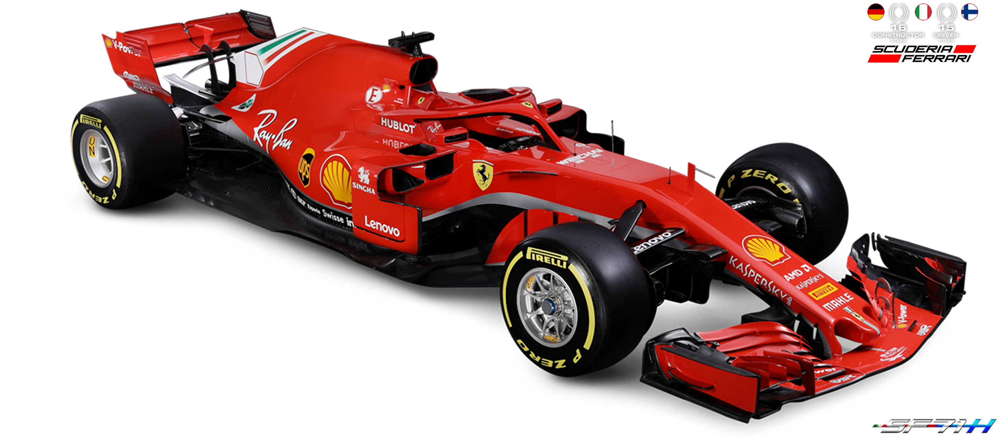

.png)
- Explore SF71H -
| Description | Power unit | ||||
|---|---|---|---|---|---|
| The SF71H (the code name for the 669 project) is the sixty fourth single-seater car designed and produced by Ferrari to compete in the Formula 1 World Championship. Rule changes introduced last season led to the introduction of significant aerodynamic modifications and wider tyres, all aimed at increasing performance. Therefore the new 2018 Ferrari F1 car has been created to make the most of the experience gained last year. Compared to 2017’s SF70H, the wheelbase has been changed slightly, with the side dimensions also revised along with the cooling system. The suspension follows the tried and tested practice of using push-rods at the front and pull-rods at the rear, however, their design has been updated based on experience gained during the first season running the wider tyres. | The number of V6 engines that can be used over the course of the season, without incurring a penalty, continues to decrease, this year from 4 to 3. The same number applies to the turbo-compressor and MGU-H - the energy recovery system attached to the turbo - while only 2 MGU-K -the device that generates kinetic energy linked to the transmission - are allowed over the year, a figure which also applies to the electronic control unit and the batteries. Therefore those in the engine department have also based their work on these new parameters. | ||||
| SPECIFICATIONS | |||||
|
|||||
| Cockpit protection | The programme | ||||
| The most obvious element to catch the eye is the Halo, designed to protect the cockpit area. After two years of on-track testing, it has now entered the rule book. It weighs around 7 Kg, plus fittings and this has only been partly compensated for with an increase of 5 Kg – from 728 to 733 – to the minimum car weight set in the 2018 regulations. | After it’s launch on Thursday 22nd February, the SF71H will be transported to Barcelona’s Catalunya Circuit, for a filming day on Sunday 25th, followed by the start of testing proper on Monday 26th. The first session runs to the end of Thursday 1st March, while the second test takes place at the same circuit from 6th to 9th March. Both Scuderia Ferrari race drivers, Kimi Raikkonen and Sebastian Vettel will be driving. | ||||
- TEAM -
Sebastian Vettel
- 52 - Race wins
- 215 - Grand prix
- 55 - Pole positons
Was born on 3 July 1987 in Heppenheim, Germany. He began karting in 1991, aged three and in 1995 he started racing. Vettel won a series of karting titles, including the German Junior Karting Championship, the Monaco Kart Cup and the European Junior Karting Championship. In 2003, he graduated to single-seaters, taking part in the German Formula BMW series, in which he came second in his first season, winning the title the following year. In 2005, he finished fifth in the Formula 3 Euroseries and had his first taste of Formula 1, when he was given a test in a Williams. In 2006, he finished second in the Formula 3 Euroseries and became test driver for BMW Sauber. In 2007, Vettel began competing in the World Series by Renault and that same year he took over from Scott Speed in the Toro Rosso team, after the European Grand Prix. In 2008, he took his first win, at the Italian Grand Prix, the youngest ever Formula 1 winner.
Kimi Raikkonen
- 20 - Race wins
- 288 - Grand prix
- 18 - Pole positons
Kimi-Matias Raikkonen was born in Espoo, Finland on 17 October 1979. He first tried karting at the age of three before going on to enjoy great success in this discipline, as from 1989. He won the Nordic Kart Championship at Varna, in Norway in 1998 and was second in the European Formula Super A Karting Championship in 1999. Switching to single-seaters, he then won the UK Formula Renault Championship in 2000. After taking part in several test with Sauber in Formula 1, Raikkonen signed for the Swiss team for the 2001 season, when he finished in the point four times. In 2002, he joined McLaren, ending the year sixth, while the following year he came second, just two points behind Michael Schumacher. He spent three more years with the British team, before joining Ferrari in 2007 and winning the World Championship that same year. He left the Scuderia at the end of 2009, spending 2010 and 2011 competing in the World Rally Championship and NASCAR. He then returned to Formula 1 with Lotus in 2012, where he spent two seasons. He rejoined the Scuderia in 2014, finishing eleventh in that year’s championship. In 2015 he was fourth and in 2016, he finished sixth.
- SEASON 2018 -
- 01Australia GP
Melbourne - 02Bahrain GP
Sakhir - 03Chinese GP
Shanghai - 04Azerbaijan Gp
Baku - 05Spanish GP
Catalunya - 06Monaco GP
Monte Carlo - 07Canadian GP
Montreal - 08French GP
Paul Ricard - 09Austrian GP
Spielberg - 10British GP
Silverstone - 11German GP
Hockenheim - 12Hungarian GP
Budapest - 13Belgian GP
Spa - 14Italian GP
Monza - 15Singapore GP
Marina Bay - 16Rusian GP
Sochi - 17Japanese GP
Suzuka - 18United States
Austin Texas - 19Mexican GP
Mexico city - 20Brazilian GP
Sao Paulo - 21Abu Dhabi GP
Yas Marina